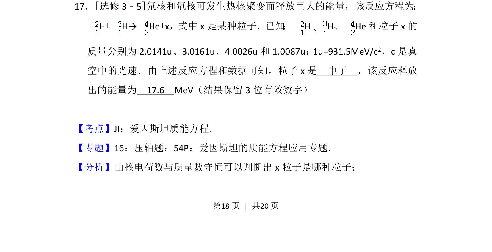
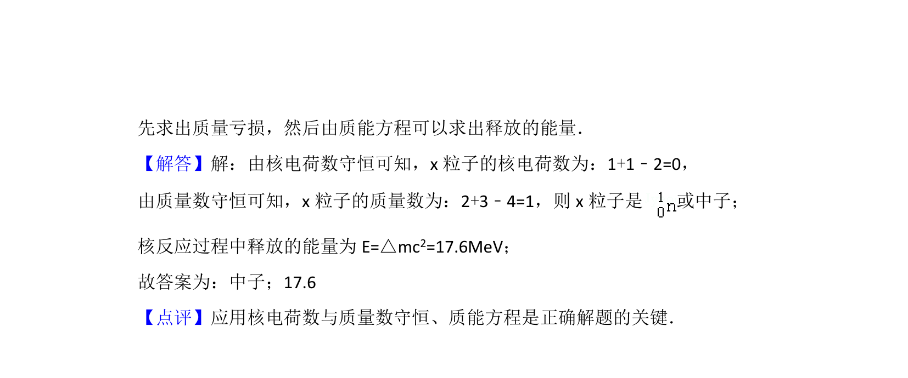

考点：核反应方程 质量亏损 质能方程

核反应方程粒子推断及利用质能方程计算聚变释放能量

📄 原 PDF 第 18 页：
素材/真题/吉林/2008-2024·（吉林）物理高考真题/2012年高考物理试卷（新课标）（解析卷）.pdf
17．[选修3﹣5]氘核和氚核可发生热核聚变而释放巨大的能量，该反应方程为： H+H→He+x，式中x是某种粒子．已知 ：H H、He和粒子x的 质量分别为2.0141u、3.0161u、4.0026u和1.0087u；1u=931.5MeV/c 2，c是真 空中的光速．由上述反应方程和数据可知，粒子x是 中子 ，该反应释放 出的能量为 17.6 MeV（结果保留3位有效数字）
【考点】JI：爱因斯坦质能方程．菁优网版权所有 【专题】16：压轴题；54P：爱因斯坦的质能方程应用专题． 【分析】由核电荷数与质量数守恒可以判断出x粒子是哪种粒子；